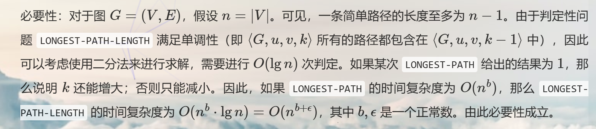

Introduction to Algorithm-06-NP completeness
Defintition
非形式化地理解：
- P问题是在多项式时间可以解决的问题
- NP问题指的是在多项式时间内可我被证明的问题，所有的P问题都是NP问题
- NP完全问题是NP问题中最难的问题，所有的NP问题都可以在多项式时间内归约到NP完全问题上
- 当证明一个问题是NP完全问题时，实际上是证明了这个问题是NP问题中最难的问题
对于一些术语的说明：
- 抽象问题是问题实例和解之间的二元关系，。特别的，如果，那么这是一个判定问题
- 例如：寻找一个图中的哈密顿回路就是一个抽象问题
- 判定问题和最优化问题：
- 判定问题是一个二元关系，例如：在图中是否存在哈密顿回路
- 最优化问题是例如：在图中寻找哈密顿回路
- 编码是，即将抽象示例集合元素映射到二进制字符串集合的函数。多边形、图、函数、有序对、程序都可以编码为二进制字符串。
- 具体问题的实例集合是二进制字符串的集合，当提供给算法的是一个长度为的一个问题实例时，算法可以在时间内产生对应的解，那么说算法在时间内解决这个问题。
- 具体问题如果是多项式时间可解的，指的是能找到在内解决问题的算法
- 复杂度类是一个在多项式时间内可解的具体判定问题的集合
- 函数是多项式时间可计算的：指的是对于，存在一个算法，对于任意的输入能在多项式时间内给出输出。
- 两种编码是多项式相关的：

- 两种编码是多项式相关的：
- 在语言理论的视角下，将判定问题看成定义在上的语言
-

- 对于一个编码的实例，可以参照：

- 邻接矩阵的编码方式如下：首先输入一个32位无符号整数表示这个图的顶点数，接下来输入个比特，下标从到表示它们。那么，如果第个比特为，那么有一条边从连向，否则没有边从连向。
- 邻接表的编码方式如下：首先输入一个32位无符号整数表示这个图的顶点数。令。接下来循环次这个过程，直到停止：在第次循环中，首先读入一个比特数，表示和相邻的节点数，接下来循环进行次，每次读入一个比特数，表示指向节点，并记录。[2]
 对于上面的复杂度分析可以看到，分析复杂度使用的$n$仍然为将实例进行编码的码长。
对于上面的复杂度分析可以看到，分析复杂度使用的$n$仍然为将实例进行编码的码长。
- 在上面的形式化之后，注意是否是多项式复杂度是对于输入的编码长度而言，而不是仅仅和输入规模有关。但是如果算法复杂度仅依赖于n并且输入中每个元素的大小是受限的，编码长度和可以视为等价的。
Reduction Algorithm
- 定义既没有要求单射，也没有要求满射。但是在归约时要求“当且仅当”
- 上面的可以非形式化地认为是难度上的
用归约算法能证明一个未知的问题是能在多项式时间内解决的。

假设有一个“判定问题 "A, 我们已经知道它不可能存在多项式时间算法。（此时暂且不考虑如何找到这样一个 A 。)进一步假设有一个多项式时间的归约，它将 A 的一个实例转化为一个 B 的实例。现在，可以用反证法来证明 B 不可能存在多项式时间算法。那么应用如图 34-1 所示的方法，我们就有某种方法能在多项式时间内解决 A, 而这与 A 没有多项式时间算法这一假设矛盾。
注意：在将问题转换为判定问题时，一般是判定当前实例是否满足或当前的整数的，这样可以获得单调性，通过二分搜索来获得原问题的解。

[1]
NP-completeness
NP-hard问题是指这个问题至少和NP问题一样难，并且不要求给定一个证书，这个问题在多项式时间内可验证。
认为电路的可满足性问题是第一个NPC问题。在这个基础上，可以将已知的NPC问题归约到新的问题上。
注意归约上面的过程中，首先要求给定一个证书，能在多项式时间内验证是不是原问题的一个解。接下来将原问题的实例转换为新的问题的实例，要求，需要当且仅当。
对于这个第一个问题电路可满足性问题是NP-hard的证明，可以考虑计算机中的解决所有问题的结构
SAT
公式满足性问题SAT问题是指给定一个布尔公式，判断是否存在一个变量赋值使得公式为真。
在将电路可满足性问题的实例转换为公式可满足性问题时，如果递归将每一个每个逻辑门的输入递归展开成公式，公式的大小（即变量和子公式的总数）会以指数级别增加。这种增长是由电路中共享的子公式（shared subformulas）引起的，特别是在输出线的扇出（fan-out）为2或更多的情况。

对于下面的例子，为这样递归地展开，相应的归约并不能在多项式时间内完成。

3-CNF-SAT
三合取范式指的是一个布尔公式是由多个子句组成的，每个子句包含恰好三个文字（变量或其否定）。3-CNF-SAT问题是指判断一个给定的布尔公式是否可以满足。
要证明3-CNF-SAT问题是NPC的，只要将SAT问题归约到3-CNF-SAT问题上即可。可以通过以下步骤进行归约：将任意的公式构建语法分析树，然后将所有的内部结点写成一个分句，整体上写成一个合取范式。
- 对于含有双蕴含的公式，可以转换为等价的合取范式
- 对于只有一个或两个文字的分句，可以添加虚拟变量来扩展为三个文字的分句
- 于是最终得到的公式就是一个3-CNF形式的公式。

团问题
团问题是指在一个图中，寻找一个大小为的团，即一个完全子图。团问题可以归约到3-CNF-SAT问题上。
要证明这个问题是NPC的，采用3-CNF-SAT问题进行归约，对于给定的三合取范式中的每一个文字建模为一个顶点，对于任意一个顶点如与除了之外的所有顶点连线，这时候原公式是可满足的当且仅当图中存在一个大小为的团。
顶点覆盖问题
顶点覆盖问题指的是在一个图中，寻找一个最小规模的顶点覆盖，即一个顶点集合，使得图中的每条边至少有一个端点在这个集合中。对应的判定问题是给定一个图和一个整数，判断是否存在一个大小为的顶点覆盖。
证明上面的问题是NPC的，考虑从团问题进行归约，给定一个图的实例，下面证明图中有大小为的团当且仅当图中存在大小为的顶点覆盖。

TSP
旅行商问题（TSP）是指给定一组城市（完全图）和它们之间的距离，寻找一条最短路径，使得旅行商访问每个城市恰好一次并返回起点。对应的判定问题为给定一个城市集合、距离矩阵和一个整数，判断是否存在一条路径长度不超过的旅行商路径。
证明TSP问题是NPC的，可以通过将哈密顿回路问题归约到TSP问题上。具体步骤如下：
将原图扩充为一个完全图，如果没有边则将权重设置为1，如果有边则将权重设置为0。于是原图存在哈密顿回路扩充后的完全图中存在路径长度不超过0的旅行商路径。
Subset-Sum Problem
子集和问题是指给定一个整数集合和一个目标整数，判断是否存在一个子集的元素之和等于目标整数。对应的判定问题为给定一个整数集合和一个整数，判断是否存在一个子集的元素之和等于。
使用3-CNF-SAT问题进行归约，具体步骤如下：
对于有个变量和个子句的三合取范式，对每一个子句和变量，构造一个集合中长度为的10进制整数，由于合取范式的特殊性，在每一个子句中，如果有一个文字为真，那么该分句为真。

在上面的构建中，由于每一种赋值，要么为1，要么为0，于是前3位的target为1，在满足成真赋值的情况后面四位的可能取值为于是加入松弛变量s